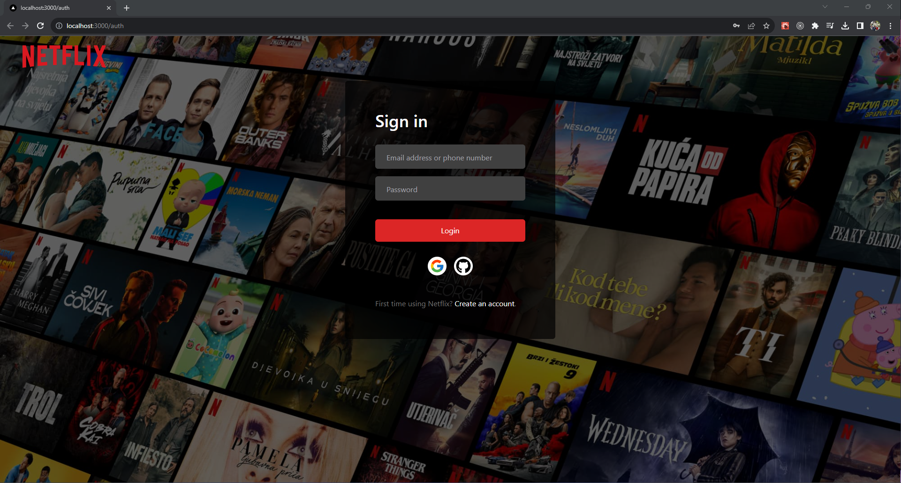
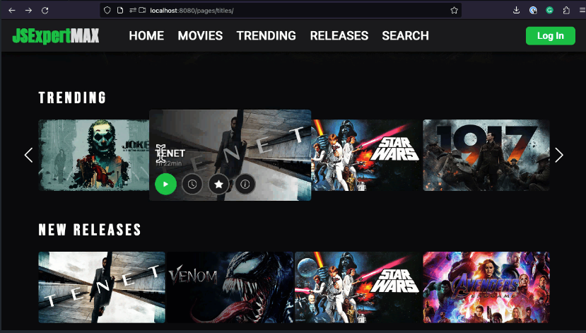
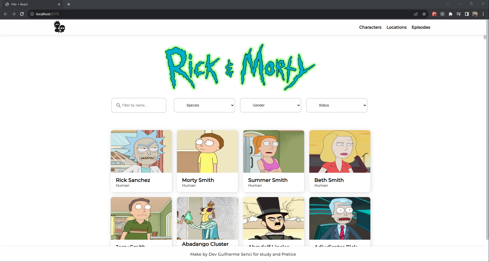
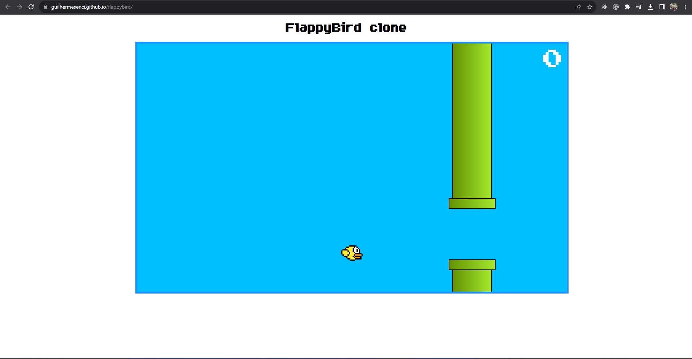

I began as a self-taught web developer, now in my final year of Systems Analysis and Development studies, enhancing my expertise. This program enriched my understanding of software architecture, data management, andbuilding robust web applications.
Experiences
2024 -- present
Ab-Inbev (Ambev Global Tech)
Front-end Specialist
I developed tools that supported internal processes, leading to cost reductions. The tool was entirely developed in JavaScript with the goal of creating an internal library for use in other tools. My challenges included time constraints and the need to structure the tool for reuse as a generic solution. I had no assistance from frameworks or libraries, and I was solely responsible for the entire frontend demand.HTML
CSS
JavaScript
Python
flask
Jinja 2
2023 -- 2024
Mockado
Front-end developer
Contributed to a project that utilized WSO2 APIs to generate mock endpoints for developers and businesses, with a user interface built using React, Redux, and Next.js. Challenges: Consuming and securing APIs, replicating routes and pages for identical user experiences.React
Redux
Next.js
Axios
WSO2
Tailwind
2022 -- 2023
Meus Ingressos
Front-end lead
Created a responsive ticket sales platform for events like concerts and stand-up shows. Challenges: Implementing user-friendly UX for event selection and ticket purchasing. Integrating mobile POS systems for vendors.React
Redux
Axios
CSS Modules
2022 -- 2023
Barbershop Management System
Front-end lead
Developed an all-in-one solution for managing barbershop operations, appointments, and client data. Challenges: Designing an intuitive user interface for scheduling and reporting. Ensuring secure access levels for barbers and managers.React
Redux
Axios
Tailwind
2022 -- 2022
TalkProccess
Front-end developer
Enhanced a SaaS platform for internal process management, training, and external client onboarding. Challenges: Integrating new features, such as knowledge testing and virtual training modules. Maintaining compatibility with mobile app counterparts.Backbone
CoffeeScript
React
Redux
Axios
LESS/SAS
Bootstrap
MySQL
2021 -- 2022
Peg de Volta
Front-end developer
Collaborated on a web-based application to facilitate FGTS-based credit allocation to clients during the pandemic. Challenges: Completing unfinished layouts and pages, form creation, email system integration. Working with the admin back-office environment.React
Redux
Axios
Styled Components
Node
2021 -- 2021
GridNet Technologies
Front-end developer
During my tenure as a front-end developer at a technology company focused on intermodal terminal management, I played a crucial role in enhancing the overall user experience and functionality of our product. My responsibilities encompassed various aspects of front-end development, including refining user interfaces, introducing new features, ensuring mobile responsiveness, and prioritizing secure form handling.React
Redux
Axios
Material-UI
Formik
2020 -- 2021
Solid Technologies
Front-end developer
My journey at Solid, from intern to junior developer, was a progressive learning experience in web development. I began by handling basic tasks involving React, HTML, and fundamental CSS. As time passed, I transitioned to more advanced web applications, enhancing my expertise in web development. This evolution allowed me to contribute effectively to complex projects and eventually step into the role of a junior developer at the company.React
Redux
Axios
HTML
CSS
JavaScript
Projects
 I created a Netflix clone using Next.js, which included automatic social media authentication, JWT
integration, video playback with previews, tracking of watched video progress, and a user registration
area. The project also featured a backend integrated with Prisma for database management, and it used
MongoDB and Node.js for API interactions.
I developed on a JavaScript project aimed at introducing augmented reality concepts to web applications.
This
project involved using the webcam to detect and interpret hand gestures made by the user, allowing for
interactive manipulation of web page functions based on these gestures.
Developed a responsive web app with React to explore characters from the "Rick and Morty" series.
Challenges: Integrating multiple API endpoints for characters, episodes, and worlds. Achieving seamless
asynchronous rendering, loading, and pagination.
I developed a Flappy Bird game clone using HTML, CSS, and JavaScript. This project was focused on
advanced
web development practices, DOM manipulation, JavaScript functions, and animation mechanics, providing
valuable insights into these aspects of web development.
I created a Netflix clone using Next.js, which included automatic social media authentication, JWT
integration, video playback with previews, tracking of watched video progress, and a user registration
area. The project also featured a backend integrated with Prisma for database management, and it used
MongoDB and Node.js for API interactions.
I developed on a JavaScript project aimed at introducing augmented reality concepts to web applications.
This
project involved using the webcam to detect and interpret hand gestures made by the user, allowing for
interactive manipulation of web page functions based on these gestures.
Developed a responsive web app with React to explore characters from the "Rick and Morty" series.
Challenges: Integrating multiple API endpoints for characters, episodes, and worlds. Achieving seamless
asynchronous rendering, loading, and pagination.
I developed a Flappy Bird game clone using HTML, CSS, and JavaScript. This project was focused on
advanced
web development practices, DOM manipulation, JavaScript functions, and animation mechanics, providing
valuable insights into these aspects of web development.

NetFlix clone
I created a Netflix clone using Next.js, which included automatic social media authentication, JWT
integration, video playback with previews, tracking of watched video progress, and a user registration
area. The project also featured a backend integrated with Prisma for database management, and it used
MongoDB and Node.js for API interactions.
React
Next
Redux
JWT
Axios
Prisma

Virtual reality JavaScript
I developed on a JavaScript project aimed at introducing augmented reality concepts to web applications.
This
project involved using the webcam to detect and interpret hand gestures made by the user, allowing for
interactive manipulation of web page functions based on these gestures.
JavaScript
HTML
CSS

Rick & morty
Developed a responsive web app with React to explore characters from the "Rick and Morty" series.
Challenges: Integrating multiple API endpoints for characters, episodes, and worlds. Achieving seamless
asynchronous rendering, loading, and pagination.
React
Redux
Axios

flappybird clone
I developed a Flappy Bird game clone using HTML, CSS, and JavaScript. This project was focused on
advanced
web development practices, DOM manipulation, JavaScript functions, and animation mechanics, providing
valuable insights into these aspects of web development.
JavaScript
HTML
CSS
Conclusion
My journey began with self-directed learning before my internship, where I honed my web development skills.
As
I transitioned into an intern and eventually a Developer, I continued to expand my knowledge and
expertise. My experiences involved contributing to various projects, improving user experience
(UX), and working with a range of technologies, including React,
Redux,Axios, HTML, CSS, and
JavaScript, all whilemaintaining a strong focus on continuous self-improvement.